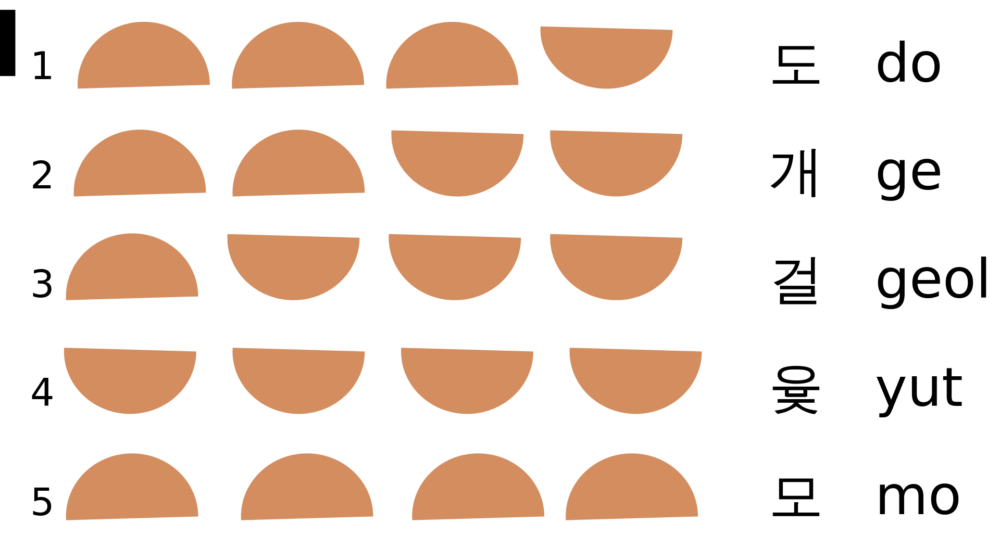
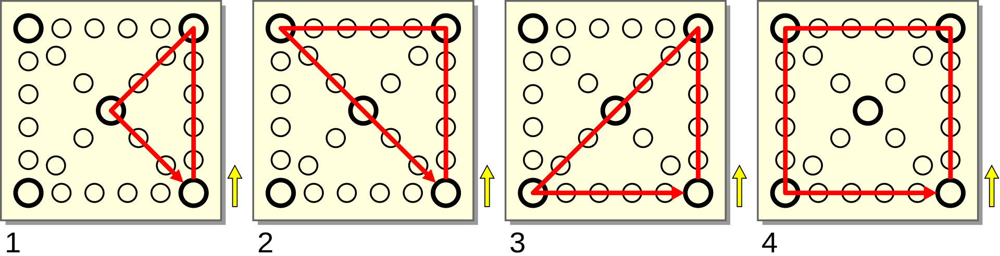

Cekiranjem opcije pravilo -1 dozvoljavata da se baci i -1. U suprotnom, za bacanje se dobija 1.
Cekiranjem opcije ,,Da li ne zelite sugestije vezane za mal?" iskljucujete sugestiju da svaki put kada kliknete na mal, u zavisnosti od poslednjeg bacanja, igra proracunava njegovu sledecu poziciju u zavisnosti od poslednjeg bacanja pod uslovom da igrac izabere najkraci put i obelezi je zelenim okvirom. Obelezavanje se gubi pustanjem misa. U slucaju da pozovete novi mal, koji onda zelite da duplirate, prvo odigrajte potez novim malom, pa onda duplirajte i obrisite jedan od dupliranih.
Cekiranjem opcije za prikaz bacanja, dobijete sliku jut stapova posle svakog bacanja.
Klikom na dodatna podesavanja ulazite u prozor sa dodatnim podesavanjima. Tu mozete da izaberete:
Opciju ,,Da li zelite sugestije vezane za tablu?" kojom svaki put kada udjete misom u polje table, u zavisnoti od poslednjeg bacanja, bice oznaceno sledece polje crvenim okvirom na koje bi mal stao ukoliko igrac izabere najkraci moguci put. Izlaskom iz polja se oznacavanje gubi.
Opciju ,,Da li zelite sugestije vezane za tablu kada pokrecete mal?" kojom svaki put kada udjete misom u polje table, u zavisnoti od poslednjeg bacanja, bice oznaceno sledece polje crvenim okvirom na koje bi mal stao ukoliko igrac izabere najkraci moguci put u trajanju od 4 sekunde. Klikom misa se oznacavanje gubi pre vremenskog roka.
Mozete da podesite i trajanje to opcije u sekundama u intervalu 0-10 sekundi.
Takodje mozete da izaberete i vremenski interval od 0 do 10 sekundi u kome vidite sliku jut stapova.
Opis igre
Ovo je tradicionalna Korejska igra Yut Nori koju igraju dva igraca. Neki istrazivaci kazu da se ona igrala jos od vremena Tri kraljevstva (57 p.n.e - 668).
Svaki igrac ima 4 zetona, zvana mal, i cilj igre je da sva cetiri mala predju preko kraja (polje S).
Igrac A igra belim malovima, a igrac B tamnim.
Igraci igraju naizmenicno, a prvo igra igrac A. Igrac koji je na potezu je obelezen i crvenim okvirom.
Potez se sastoji iz vise delova.
Igrac baci jut stapove.Igrac izabere mal kojim ce igrati ili doda novi mal.Igrac odigra izabranim malom prema pravilima.
Bacaju se 4 jut stapa (slika 1), tako sto se pritisne na taster ili pritiskom na B ili space na tastaturi.
Rezultat bacanja moze biti 1,2,3,4 ili 5. Ukoliko se cekira opcija u podesavanjima, bacanje moze da bude i -1 (tako sto se zadnja strane jednog stapa obelezi crnom tackom;
ukoliko je samo taj stap okrenut zadnjom stranom, bacanje se racuna kao -1).

Slika 1: Broj poena u zavisnosti od toga kako su stapovi pali, i imena tih poteza na Korejskom jeziku.
Igrac ima slobodu da odigra potez malom koji je na tabli, ili da doda novi pritiskom na taster ili preko tastature (A na tastaturi za igraca A, ili D za igraca B).
Mal pocinje kretanje iz polja S, i krece se u smeru suprotnom u odnosu na kretanje kazljke sata. Mal se krece po tabli za onoliko polja koliko je baceno. Ukoliko igrac nije siguran gde treba da stane na tabli, postoji sugestija (sugestitrano polje dobije crveni ili zeleni okvir).
Ukoliko mal stane na cosak table, ili na centar table, igrac moze da izabere da krene precicom (slika 2).
Ukoliko je baceno -1, igrac ima pravo, da odigra novim malom tako sto ce ga postaviti jedno polje pre (znaci jedno polje levo od) pocetnog polja S.

Slika 2: Cetiri puta kojima moze da se krece mal.
Ako mal stane na polje na kome se nalazi mal istog igraca, taj igrac ima pravo da izabere da se od tada malovi krecu zajedno. Dvoklikom na mal, malovi dobijaju veci broj, i na taj nacin se "grupisu", sto olaksava igracu.
Ukoliko mal stane na polje sa jednim ili vise malova protivnickog igraca, on ih ,,pojede" i svi protivnicki malovi sa tog polja se sklanjaju sa table. Sklanjanje mala sa table se vrsi desnim klikom na mal. S je takodje polje i kada mal stigne na polje S moze da bude sklonjen protivnickim malom koji je obisao citavu tablu, ali ne malom koji je tek dodat.
Igrac osvaja poen kada mal prodje polje S (sto znaci da mal mora da ima dovoljno veliko bacanje da dodje u polja S, i onda da ima barem jos +1 da ga prodje), i taj rezultat upisuje pritiskom na odgovarajuci taster. Nije obavezno da igrac baci tacan broj. Posle toga mal se sklanja sa table desnim klikom. Igrac pobedjuje kada osvoji 4 poena.
Ukoliko se baci 4 (yut) ili 5 (mo) igrac baca stapove ponovo. Moze da ih baca ponovo neogranicen broj puta (odnosno dok ne pobedi u igri).
Kada igrac zavrsi potez, mora da pritisne taster
da je potez zavrsen ili enter na tastaturi.
Pritiskom na taster reset, ili pritiskom na escape na tastaturi resetuje se citava igra.